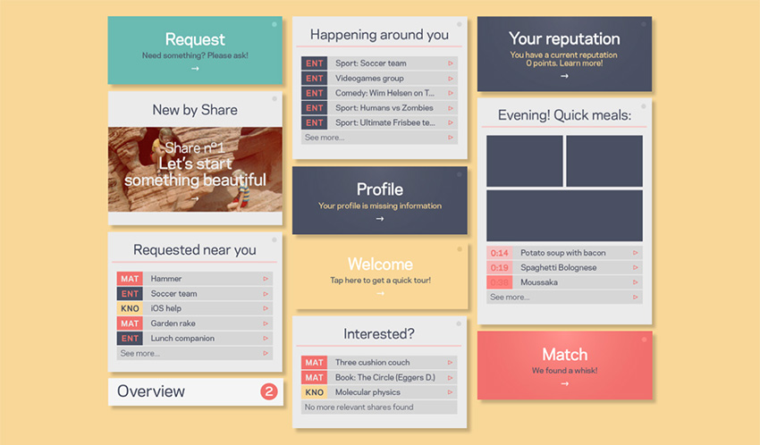

Portfolio
-
Visual Explanations of Astronomical Phenomena (2016)
Visual Explanations of Astronomical Phenomena (2016)
Research project originally started in the context of pursuing my master's degree Media & Information Design at LUCA School of Arts (2016), where I tried to look for ways to visually explain astronomical phenomena to a broad public by creating interactive data visualizations. The focus lies on the accessability, interactivity, scientific accuracy and the honest feeling of wonder about the universe. I graduated with this project in 2016, magna cum laude. Learn more.
Onderzoeksproject in het kader van de masteropleiding Media & Information Design aan LUCA School of Arts (2016), waarbij ik aan de hand van interactieve datavisualisaties zocht naar manieren waarop astronomische fenomenen grafisch voorgesteld kunnen worden aan een breed publiek. De nadruk ligt op toegankelijkheid, interactiviteit, wetenschappelijke correctheid en verwondering over de kosmos. Ik studeerde af met dit project in 2016, magna cum laude. Leer meer.

-
Het Grote Ontwerp (2015)
Het Grote Ontwerp (2015)
Het Grote Ontwerp is the end result of a research period, completed together with Jonas Denil, in the context of our bachelor's project in Graphic Design at LUCA School of Arts (Sint-Lukas Brussels). The project tries to provide an answer to the urgent question for more cooperation between municipalities and their inhabitants, during discussions about the evolution of their city. Learn more.
Het Grote Ontwerp is het resultaat van een onderzoek dat ik samen met Jonas Denil voerde, in het kader van ons bachelorproject van de opleiding Grafisch Ontwerp aan LUCA School of Arts (Sint-Lukas Brussel). Het project tracht een antwoord te bieden op de steeds prangendere vraag naar meer samenwerking tussen stadsbesturen en hun inwoners tijdens discussies over de evolutie van hun stad. Leer meer.

-
Share (2014)
Share (2014)
Share is a fictional online platform that could provide users with the possibility to strengthen their community and neighborhood. The main feature of the application is the ability to request and share materials, entertainment and knowledge. Correspondance through the app is limited, as the main purpose was to get people together again, and away from their screens. This project is nothing more than the result of a long period of research and development on usability and user-experience design in our current virtual society. Learn more.
Share is een fictief online platform dat zijn gebruikers de mogelijkheid zou geven om hun gemeenschap en buurt te versterken. De hoofdtoepassing is de mogelijkheid tot het aanvragen en delen van materiaal, entertainment en kennis. Communicatie via de app is gelimiteerd, aangezien mensen in het echte leven weer samenbrengen, en weg van hun scherm, het doel van het platform was. Dit project was het resultaat van een lange periode van onderzoek naar gebruiksvriendelijkheid en user-experience design in onze huidige virtuele samenleving. Leer meer.
 -
Typology Calendar (2014)
Typology Calendar (2014)
This calendar displays a systematically generated typology and combines image with the content in an investigating and evolving manner. I wanted to add something more meaningful to my calendar, an extra point of interest. This is why I focused on the phases of the moon, and the apparent height of the moon in the night sky in Baltimore (USA), where I was residing back then.
Deze kalender toont een systematisch gegenereerde typologie en combineert deze afbeeldingen met de inhoud op een onderzoekende, evoluerende wijze. Ik wilde aan mijn kalender een meerwaarde meegeven, een extra interessepunt. Vandaar focuste ik me op de maanfasen, en de schijnbare hoogte van de maan aan de nachtelijke hemel in Baltimore (USA), waar ik op dat moment verbleef.
-
Penguin sketches (2014)
Pinguïnschetsen (2014)
A big part of my education involved drawing. This series focusses on quick anatomical studies of the (not so) majestic penguin. The goal of the project was to investigate the possibilities and structure of my approach, while sticking to a chosen theme.
Tekenen maakte een groot deel uit van mijn opleiding. In deze reeks ligt de focus op snelle studies van de anatomie van de (niet zo) majestueuze pinguïn. Het doel van het project was om onderzoekend te werk te gaan aan de hand van een zelfgekozen onderwerp.
-
Collected Magazine (2014)
Collected Magazine (2014)
Collected is a fictional magazine about the history and culture of collecting for which I designed the first issue. The design and development of the magazine were an exercise in research and identity. I tried to pursue a truely functional approach in the design.
(1/2) Collected is een fictief magazine dat gaat over de geschiedenis en brede cultuur van verzamelen. Het ontwerp en het ontwikkelingsproces van het magazine waren een oefening in research en visuele identiteit. Ik probeerde het design te benaderen vanuit een puur functioneel standpunt, zonder veel boe of baa.
ABOUT
OVER
Once a young and ambitious student, now holding a master's degree in Media & Information Design. Currently working as an Information Architect at Statik and on my own as a freelance graphic designer. Functionality, honesty and an uncoined curiosity remain key factors in what I do. In my spare time you can find me traveling through a distant country or tending a tiny garden and listening to all kinds of music.
Ooit een jonge en ambitieuze student, nu de trotse bezitter van een masterdiploma in Media & Information Design. Momenteel werk ik als Information Architect bij Statik en op mezelf als freelance grafisch ontwerper. Functionaliteit, eerlijkheid en een bevlogen nieuwsgierigheid liggen nog steeds aan de basis van wat ik doe. In mijn vrije tijd vind je me terug op reis in een ver land of zwoegend in een klein tuintje, terwijl ik luister naar allerlei muzieksoorten.
I could very well be the right guy for your job. Shoot me a message at info@antonlecock.be.
Ik zou wel eens de juiste persoon voor jouw volgende opdracht kunnen zijn. Stuur me een bericht, naar info@antonlecock.be. Niet twijfelen!
© , Anton Lecock
This portfolio is always under construction.
Dit portfolio is altijd in opbouw.